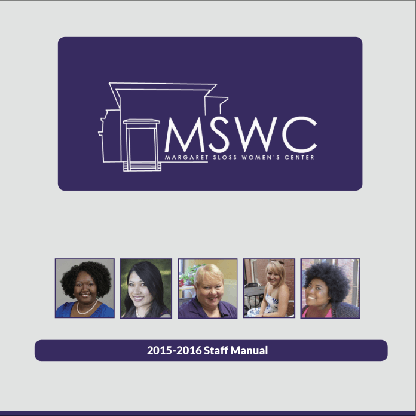
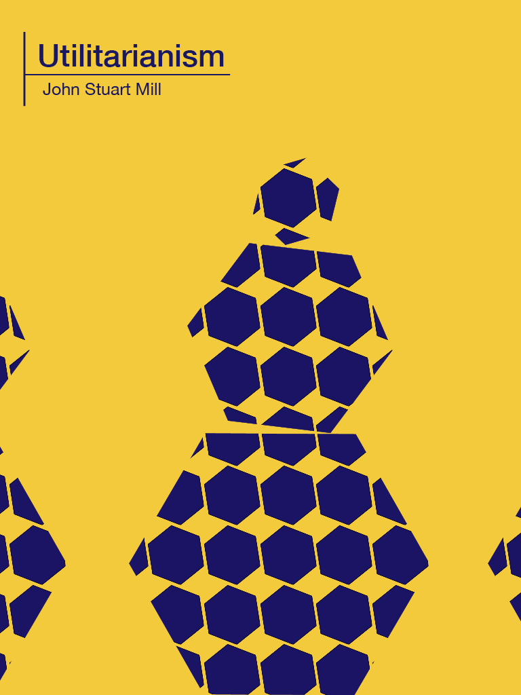

Courselink
Portfolio Under Construction
Courselink is a professional development platform for college studnets. Its helps students track the knowledge, skills, and abilities they have learned in each course. And it allows them to use what they have learned to plan their career moves after college.
Kitchen Builder
Portfolio Under Construction
Kitchen builder is a home design application that we used to test whether users like low- or high-fidelity graphics for their initial room-generation workflow in these types of applicaitons.

PBEA
Portfolio Under Construction
We provide plant breeding elearning content to schools do not have plant breeding specialists. I edited elearning content for the program. I worked with the text, images, activities, and animiations.
Master's Program Website{kind=link}
Sloss Center Manual
Portfolio Under Construction
I brought together the Center's documenmtation into one coherent, clear manual that could be update and printed with readily available software.

Untilitarianism EPUB
Portfolio Under Construction
I created an epub of Utilitarianism. The texts is in the public domain. I made a readable copy and distribute it online for readers.
